Hoy en día en una página web, todo el texto está dentro de algún elemento (delimitados mediante etiquetas), en realidad hay tres contextos principales a tener en cuenta sobre el texto
Lógicamente dentro de un párrafo, no podemos indicar otro párrafo; es decir no podemos meter una etiqueta p, dentro de una etiqueta h1.
Cuando un texto está dentro de un elemento de párrafo (como p), hará que el texto siguiente quede en otro párrafo, por lo tanto habrá un salto de párrafo entre ambos textos.
Por ejemplo, podemos indicar que un texto es strong y em a la vez.
Desde hace años todo texto en un documento HTML debe ir dentro de una etiqueta que sirva para decir qué tipo de texto es. Y eso significa, que el texto debe de ir dentro de una etiqueta de párrafo. Se comentan las etiquetas disponibles para marcar párrafos.
La norma HTML estándar establece que el texto de la página debe estar contenido dentro de un elemento. Es decir, no se puede poner texto directamente dentro de la etiqueta body; ha de haber un contenedor para ese texto.
El elemento más sencillo lo marca la etiqueta p, que indica un elemento de párrafo normal. Todo texto dentro de una etiqueta p, queda marcado como texto dentro de un párrafo normal.
Normalmente los navegadores utilizan fuentes tipo Times de tamaño 11pt para la letra de párrafo normal. Ejemplo de uso:
<body> <p> Párrafo con un poco de texto </p> <p> y entre cada palabra dejando un solo espacio </body> |
En el navegador saldría:
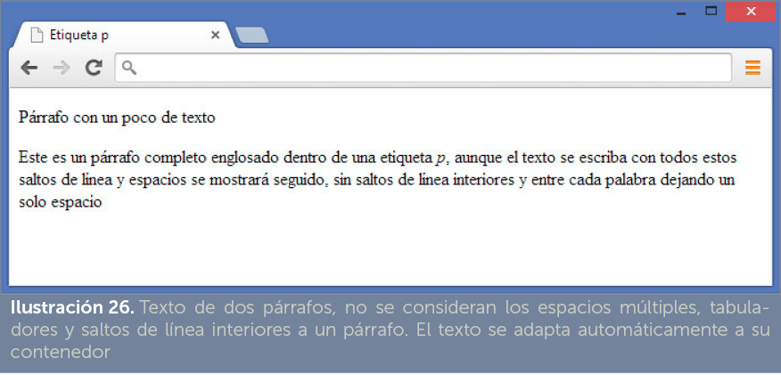
En la imagen se observa el modo en el que el navegador muestra el párrafo. Por defecto los párrafos tipo p dejan espacio arriba y abajo (normalmente media línea en cada dirección).
Hay una serie de siete etiquetas que comienzan con la letra h a la que le sigue un número del 1 al 7. Sirven para marcar párrafos de forma que se considerarán títulos del texto. De modo que el elemento h1 marcará títulos de primer nivel, h2 de segundo nivel,…
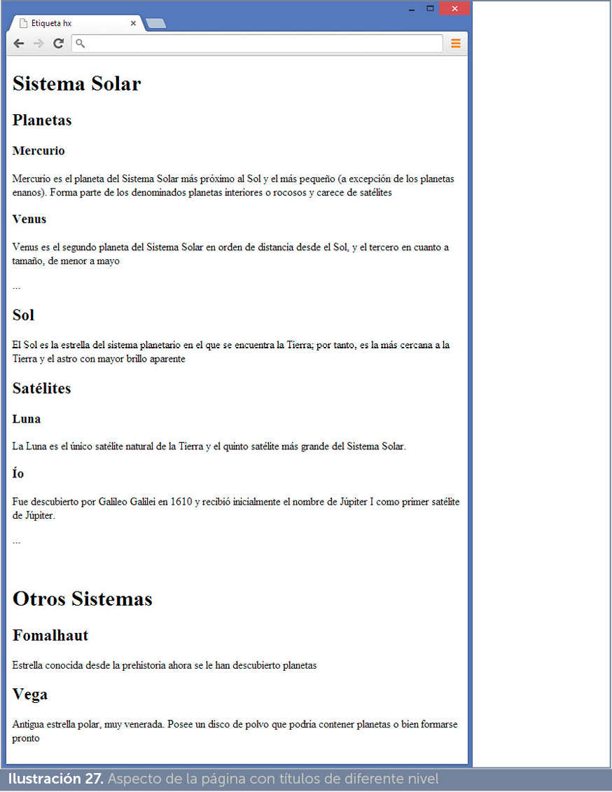
Ejemplo:
<h3>Ío</h3> |
<h1>Otros Sistemas</h1> </p> </p> |
El resultado en el navegador es el mostrado en la Ilustración 27
A veces es necesario dentro del texto de un determinado párrafo hacer un salto de línea. El elemento que lo realiza no tiene cierre y se llama br. Ejemplo:
<p>Primera línea <br>Segunda línea</p> |
Aparecerá cada texto en una línea distinta.
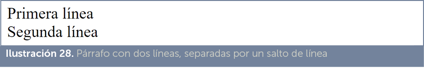
Otra posibilidad es hacer un salto pero dejando una línea horizontal en el hueco de las palabras. Esto lo hace la etiqueta hr (que tampoco tiene cierre):
<p>Primera línea <hr>Segunda línea</p>
Aunque los navegadores entienden este código. En realidad hr tiene que estar fuera de las etiquetas de párrafo, es decir lo correcto es:
<p>Primer párrafo</p> <hr> <p>Segundo párrafo</p> |
Resultado:
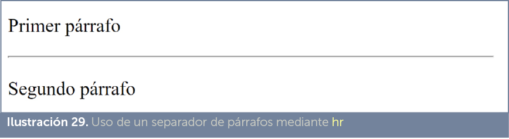
En este caso, detallaremos los elementos que se emplean para señalar texto interior a un párrafo.
En HTML 5 el texto importante se marca con el elemento strong. En general todos los navegadores marcan el texto strong en negrita (letra más gruesa), pero que se muestre en negrita es un acuerdo visual que se puede modificar con el lenguaje CSS. Es decir, no es lo mismo texto en negrita que texto importante.
Sin duda, strong es uno de los elementos HTML fundamentales e imprescindible en los documentos HTML.
El elemento em marca texto como enfatizado. El resultado visual con que le dan formato por defecto los navegadores es texto en cursiva.
La idea semántica es marcar con em texto con énfasis de segundo nivel (dejando a strong el primer nivel) que normalmente se dedica a palabras no aceptadas aun, títulos de trabajos, apodos, texto subjetivo, etc.
Se trata del tercer elemento de HTML5 para remarcar texto. Se hace a través el elemento mark. En este caso, su efecto visual, suele ser aplicar en el texto así marcado un fondo de color vivo que simula el uso de un subrayador. Ejemplo:
<p>Yo soy texto normal, <mark>y yo estoy remarcado </mark></p> |
Obtendría el resultado:
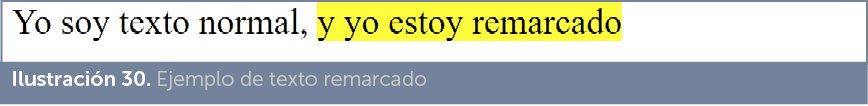
Este elemento no es tan antiguo como los anteriores porque apareció con HTML5 (los navegadores antiguos no lo reconocen). La idea semántica es marcar texto que queremos realzar de forma muy llamativa indicado texto a recordar o sobre el que profundizar.
En HTML5 existen tres formas de marcar citas:
Como dijo Julio César, <q cite=”http://es.wikipedia.org/wiki/Alea_iacta_est”> |
No es obligatorio utilizar el atributo cite. Este atributo permite indicar una fuente para consultar la cita original (los navegadores, sin embargo no hacen nada con el contenido de este enlace).
<p> Edgar Codd publicó: <cite>Un modelo relacional de datos para grandes bancos de datos compartidos </cite> en 1970 </p> |
Los navegadores suelen mostrar el contenido de cite en cursiva.
<blockquote España se constituye en un Estado social y democrático de Derecho, que propugna como valores superiores de su ordenamiento jurídico la libertad, la justicia, la igualdad y el pluralismo político. |
Puede utilizar el atributo cite (como se observa en el ejemplo), para indicar la dirección URL que se ha utilizado como fuente de la cita.
Visualmente los navegadores muestran el texto blockquote añadiendo una sangría a la derecha y a la izquierda. Ignoran, visualmente, el uso del atributo cite, pero otras herramientas sí usan este contenido.
Permite que el texto aparezca por debajo de la línea base y en un tamaño más pequeño. Lo hace el elemento sub, ejemplo:
<p>La fórmula del agua es H<sub>2</sub>O</p> |
Mostraría: H2O
Parecida al anterior, pero ahora el texto marcado con el elemento sup aparecerá por encima y en pequeño. Ejemplo:
<p>La fórmula del agua es H<sup>2</sup>O</p> |
Obtendría: H2O
Marcado de letra pequeña. Se usa, por ejemplo en textos que marquen copyright, derechos de uso, comentarios, notas anexas y letra pequeña (tipo la de los contratos) en general. El efecto visual es que el texto sale con un tamaño más pequeño. Es posible incluso anidar un elemento small dentro de otro, de modo que cada vez sale más pequeño el texto. Ejemplo:
Texto normal <small>Pequeño <small>Aún más pequeño</small></small> |
Resultado:
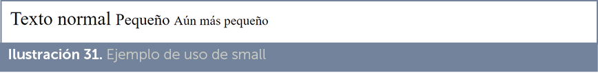
Se trata de un antiguo elemento de las páginas web que permitía indicar un subrayado. En la versión de HTML 4 quedó obsoleto, no se recomendaba su uso ya que el subrayado se reserva para los enlaces. Con HTML 5 se ha redefinido su uso para marcar texto obsoleto que, visualmente, se muestra con efecto de tachado.
Ejemplo:
La capital de Alemania es <s>Bonn</s> Berlín |
Resultado:
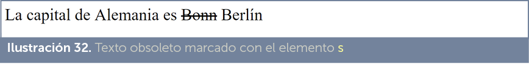
Se trata del elemento histórico (de las primeras versiones de HTML) utilizado para marcar texto en negrita. En HTML 4 quedó como obsoleto. En HTML 5 se volvió a permitir pero solo si necesitamos un nivel de marcado de texto más allá del uso de strong, em o mark. En definitiva, elemento de uso muy poco aconsejable que se mantienen solo por la gran cantidad de creadores que lo siguen utilizando.
Tiene el mismo problema que el anterior. Es el elemento histórico (de las primeras versiones de HTML) utilizado para marcar texto en cursiva. En HTML 4 quedó como obsoleto. En HTML 5 se puede utilizar para marcar texto tipo alternativo si no encaja con otros elementos de marcado de caracteres.
Al igual que ocurre con el elemento b, su uso no es aconsejable.
Marca texto que indica una abreviatura o un acrónimo. Su uso requiere utilizar el atributo title para indicar el significado de la abreviatura. En general, los navegadores no muestran ningún resultado, pero sí un cartel con el contenido de title cuando se arrima el ratón. Ejemplo:
<p>Se ha coronado a <abbr title=”Su Alteza Real”>SAR</abbr> el Rey Felipe VI </p> |
|
En HTML 5 se eliminó el uso del elemento acronym que estaba pensado para acrónimos. Ahora tanto acrónimos como abreviaturas se deben utilizar con abbr. |
El elemento dfn se usa de forma similar al anterior. Sirve para indicar definiciones para el término o palabras que encuadra.
Ejemplo:
<dfn title=”usar dos conceptos de significado opuesto en una sola expresión”>oxímoron </dfn> |
Los navegadores suelen mostrar el contenido del elemento en cursiva y, como siempre, en un cartelito muestran el contenido del atributo title:
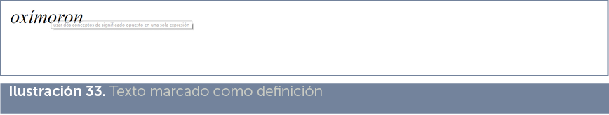
HTML proporciona un elemento llamado code que se utiliza cuando en un documento deseamos escribir ejemplos de código escritos en un lenguaje de programación. Por ejemplo:
<p>Este es un ejemplo de código en JavaScript:</p> <code> window.onload=function(){
alert(“Hola”); } </code> |
Lo cual obtendría este resultado:
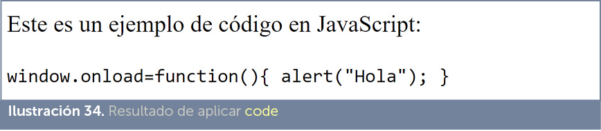
Se puede observar como los navegadores modifican el tipo de letra (utilizan un tipo de letra monoespaciada) pero no respetan los espacios y tabuladores utilizados para indicar el código. Como es muy normal querer respetar los espacios y tabuladores cuando se escriben ejemplos de código, lo habitual es hacer esta combinación:
<p>Este es un ejemplo de código en JavaScript:</p> <pre><code> window.onload=function(){
alert(“Hola”); } </code></pre> |
Y así obtenemos este otro resultado:
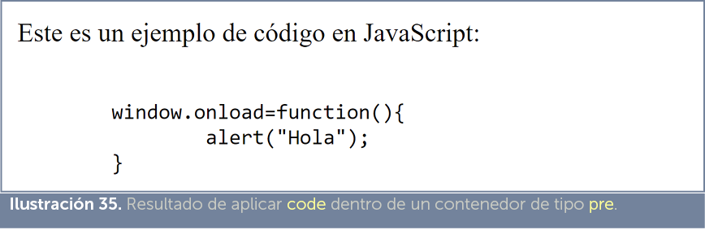
Con intenciones similares al elemento anterior, tenemos el elemento samp. Se utiliza cuando queremos en un documento indicar ejemplos de resultados de operaciones en un ordenador. Ejemplo:
<p>Al ejecutar el comando obtuve el mensaje </p> |
Los navegadores suelen mostrar este elemento en letra monoespaciada. La salida del código anterior suele ser:
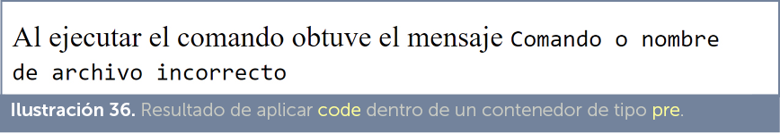
El elemento kbd sirve para indicar el nombre de una tecla o combinación de teclas (también comandos de voz o entradas de menú). Se puede indicar el atributo title para señalar el significado de la tecla.
Ejemplo:
<p>Para finalizar puse <kbd>Ctrl+C</kbd></p> |
El elemento var sirve para indicar texto que se refiere a nombres de variables de un programa informático. Sólo tiene sentido su uso para documentos sobre programación.
El elemento time está presente desde HTML5 (en Internet Explorer desde la versión 9) y permite indicar una fecha y una hora (por ejemplo 10:00). Atributos:
Ejemplo:
Hoy es <time datetime=”2013-10-13”>13 de Octubre de 2013</time>,se encendió el servidor a la |
<bdo dir=”rtl”>Este texto sale al revés</bdo> |
Saldría séver la elas otxet etsE
Tiene un atributo llamado dir que posee dos valores posibles: ltr (el texto se muestra de izquierda a derecha) y rtl (el texto se muestra de derecha a izquierda)
Los navegadores siguen mostrando este texto con un subrayado.
Sirve para marcar un trozo de texto de forma inespecífica, sin indicar semántica alguna. En definitiva, selecciona un trozo de texto por necesidades técnicas (por ejemplo para indicar un formato CSS diferente a ese texto).
La recomendación es utilizar un elemento más semántico siempre que sea posible.
El elemento address permite indicar una dirección, especialmente indicada para mostrar información sobre el autor o los créditos del documento (con información de los autores por ejemplo) al estilo de los pies de artículos periodísticos.
Aunque, de forma clásica, se le considera un elemento de marcado de párrafos, actualmente se le ha denotado como un elemento de marcado de secciones
Ejemplo:
<address> Jorge Sánchez</a><br> Calle Los Informáticos 5<br> 34001<br> |
Los navegadores suelen mostrar este tipo de párrafos en cursiva y centrados.
Permiten marcar texto para indicar como texto que se está revisando y que falta decidir su contenido final. Hay dos elementos de este tipo ins y del.
Ambos elementos pueden utilizar dos atributos:
Ejemplo:
<p>La capital de Alemania es <del>Bonn</del> <ins datetime=”20120312”>Berlín</ins> </p> |
Resultado:
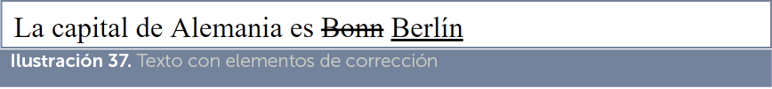
El código marcado para eliminar aparece tachado y el de inserción aparece subrayado.
Las listas permiten crear párrafos agrupados y alineados mediante símbolos como viñetas o números para facilitar la lectura y organización de las ideas del documento.
Las listas con viñetas se deben englobar dentro de un elemento ul (acrónimo de unordered list, lista no ordenada), después cada párrafo de la lista estará dentro de elementos de tipo li (de list item, elemento de lista).
Ejemplo:
<p>Lista de la compra</p> <ul> |
Resultado:
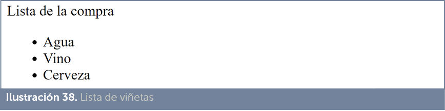
Las listas numéricas aparecen dentro del elemento ol (de ordered list, lista ordenada), después cada párrafo de la lista estará dentro de elementos de tipo li, al igual que las anteriores. La diferencia ahora es que cada párrafo con li, aparece con un número y no con una viñeta.
Ejemplo:
<p>Lista de la compra</p> <ol> |
Resultado:
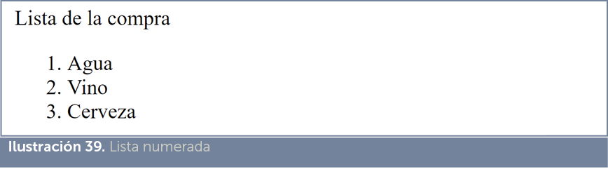
Es posible meter una lista dentro de otra, por ejemplo:
<p>Lista de la compra</p> <ul> |
Con el resultado:
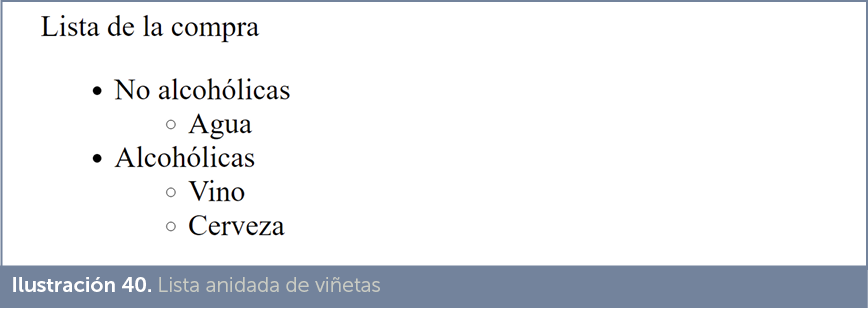
También es posible anidar mezclando tipos de listas:
<p>Lista de la compra</p> <ol> |
Con el resultado:
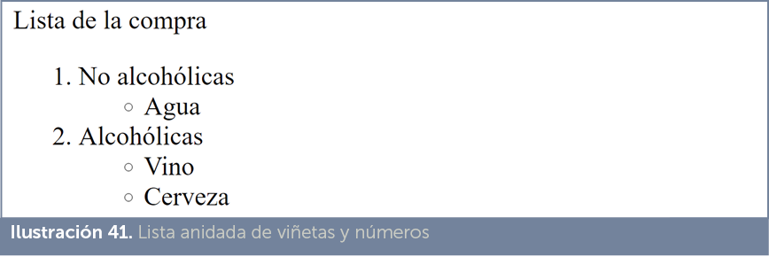
Permite crear una lista de definiciones de términos. En ellas se indica el término a definir y su significado. Ejemplo:
<dl> |
<dt>Linux</dt> <dd> <br> |
Resultado:
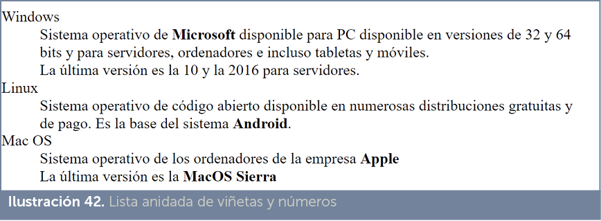